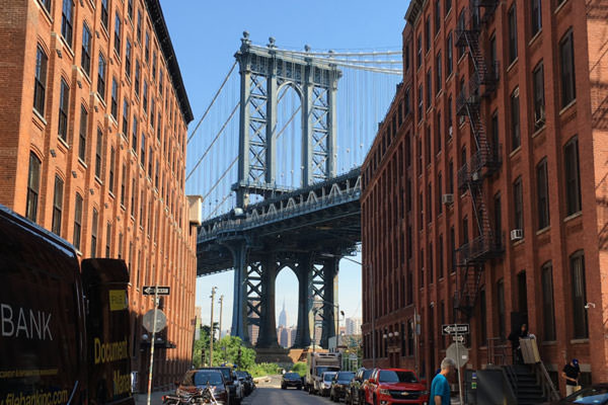
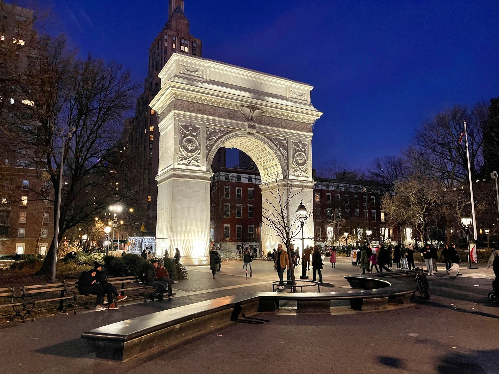
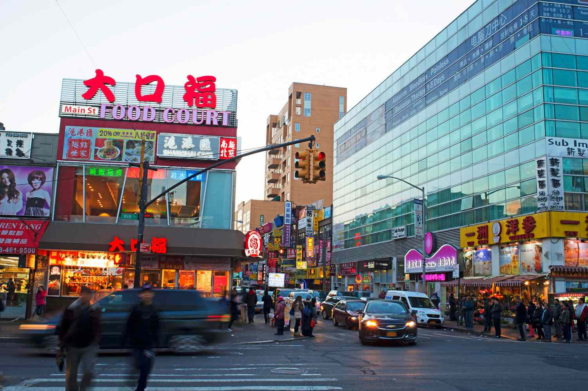
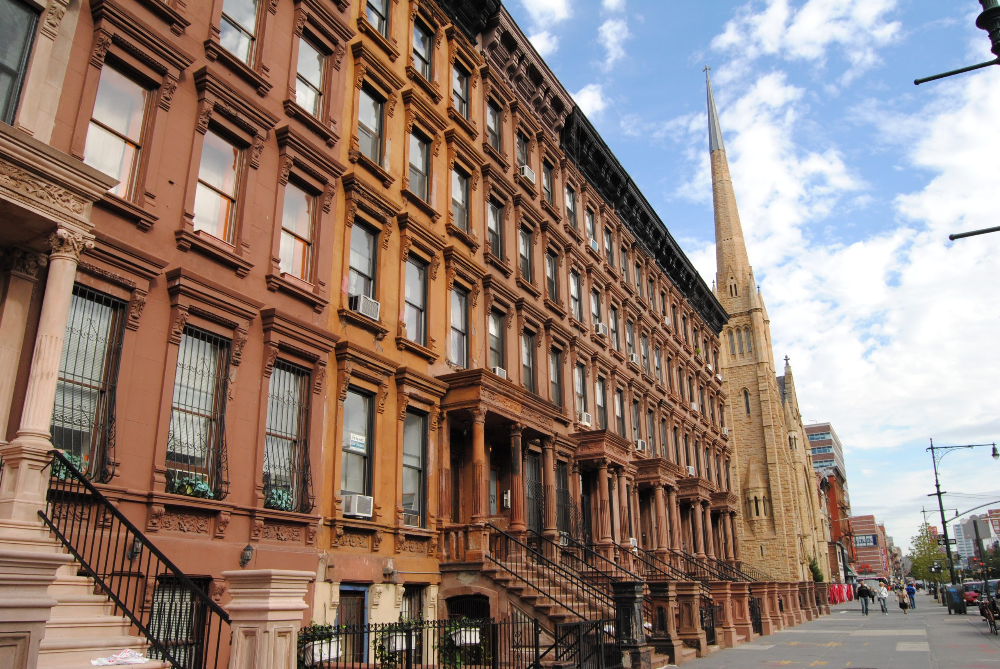
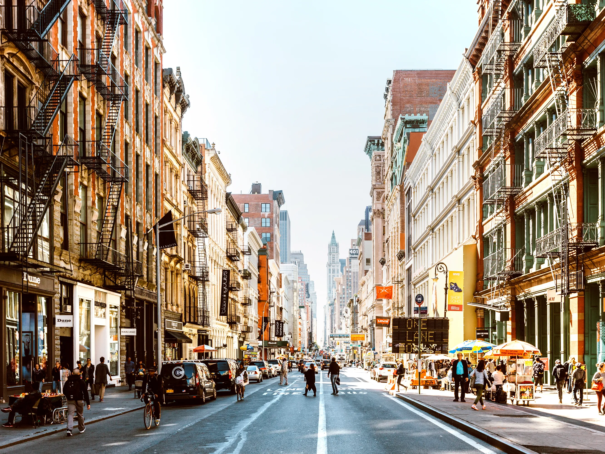
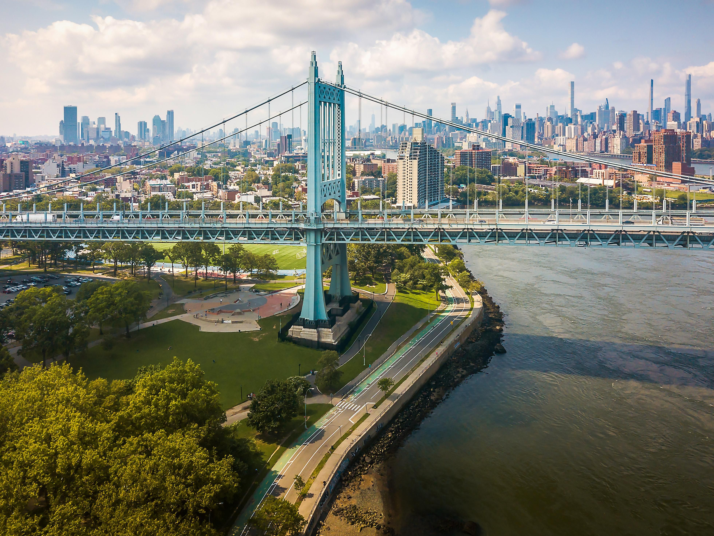

Williamsburg
Brooklyn's creative hub with vintage shops, street art, and waterfront views.
Born and raised in New York City, I am here to share the neighborhoods, food spots, and hidden gems that make this city unforgettable. Skip the tourist traps and experience the real NYC.
Each corner of the city has its own personality. From the arts scene in Williamsburg to the historic streets of Greenwich Village, discover what makes each neighborhood unique.

Brooklyn's creative hub with vintage shops, street art, and waterfront views.

Historic charm, jazz clubs, and cobblestone streets in Manhattan's heart.

Global food capital known for vibrant street life, regional Asian cuisine, and no-frills authenticity.

Cultural cornerstone with rich Black history, iconic music venues, and beautiful residential streets.

Iconic cast-iron architecture, high-end shopping, and a legacy rooted in art and design.

Diverse, food-loving neighborhood with Mediterranean roots, museums, and skyline views.
From iconic landmarks to off-the-beaten-path spots, filtered by neighborhood, budget, and indoor/outdoor options.
Browse AttractionsCurated restaurant picks for solo diners, friend groups, families, and budget-conscious travelers who want authentic flavor.
See Food GuideNYC through a local lens: real moments that capture the energy, diversity, and character of the five boroughs.
View Gallery